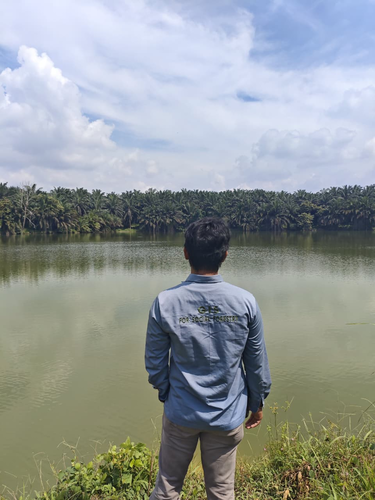

Reihan Apriandi
Forestry & Spatial Data Science
Remote Sensing · Environmental Analytics
About Me
I am a forestry undergraduate at Universitas Riau, currently in my final year. My work so far has moved between the field and the desk: supervising excavation sites for boundary compliance in Riau, measuring forest plots for an above-ground biomass study on peatland, and digitizing land cover data from satellite imagery at RECOFTC. On the analysis side I use QGIS, ArcGIS, Google Earth Engine, and Python (Pandas, Matplotlib).
I am looking for entry-level roles in GIS analysis, remote sensing, or environmental data work, preferably connected to forest monitoring.

Skills
-
Remote Sensing
- Land cover and land use change analysis from satellite imagery (NASA ARSET)
- Active fire, smoke, and post-fire monitoring (NASA ARSET)
- Water quality monitoring for lakes and coastal regions (NASA ARSET)
- Hyperspectral imagery for land and coastal systems (NASA ARSET)
- Marine and ocean data analysis (Copernicus Marine Service)
- Accuracy assessment with confusion matrices (RECOFTC land cover validation)
-
GIS & Mapping
- QGIS for cartography and spatial analysis (Advanced QGIS, Spatial Thoughts)
- ArcGIS for climate-focused spatial analysis (Esri GIS for Climate Action)
- Google Earth Engine for land cover monitoring
- Web maps with Leaflet.js and Folium; dashboards with Streamlit
- UAV photogrammetry with Agisoft Metashape and OpenDroneMap
-
Forestry & Field Work
- AGB and carbon stock surveys: DBH, height, and species identification (peatland study, PT Hatfield)
- Allometric equations and ground-truth validation
- Plot boundary staking and excavation compliance supervision
- Forest policy and governance analysis (RECOFTC)
- REDD+ and forest carbon frameworks (UNITAR / UN Environment)
- Wildlife population density estimation (Harimau Kita tiger analysis)
-
Data Analysis & Machine Learning
- Data cleaning, analysis, and visualization (Google Data Analytics)
- Python with Pandas and Matplotlib; R and SQL
- Time series analysis and forecasting (openHPI)
- Supervised classification with scikit-learn (Oracle Cloud Data Science Professional, DataCamp AI Engineer Associate)
- Statistical data analysis (DataCamp Certified Data Analyst Associate)
These skills come from named certifications and field projects. The complete list of certifications, with issuers and dates, is on the Experience page.